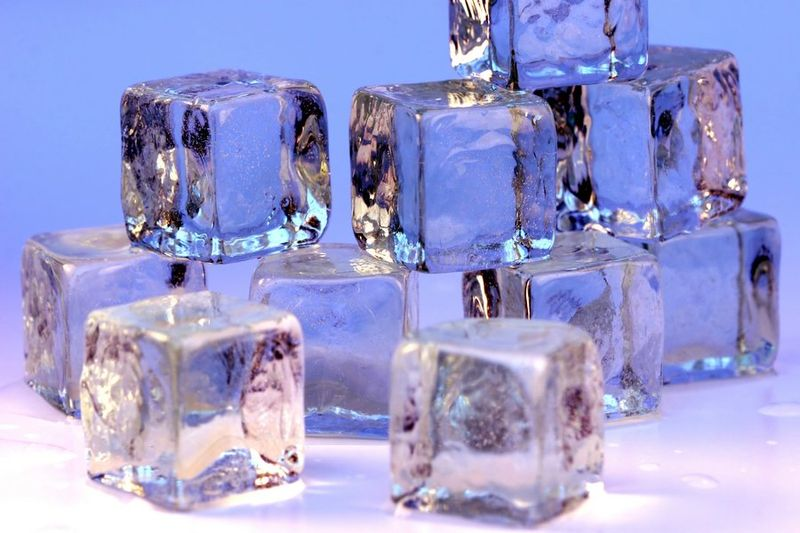

Ice Cubes

Description
For people who don't know how to make ice when the ice tray is empty
Ingredients
- 2 cups water
- tablespoons water (additional if needed)
Steps
- Take the trays over to the sink and fill them with cold water. (Hot water will freeze faster and more clear).
- Place the water filled ice trays back in the freezer.
- Shut the door to the freezer.
- Be sure to leave for around 4-6 hours at least to make sure it is frozen.